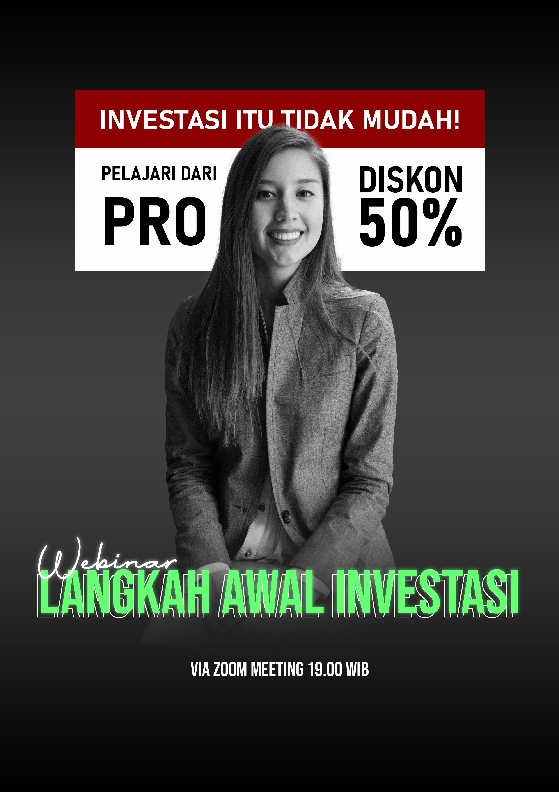

Poster Digital
Poster digital dapat dibuat dengan menggunakan beberapa perangkat lunak seperti Adobe Photoshop, Coreldraw, Adobe Ilustrator, dsb. Adapun beberapa langkah dasar dalam pembuatan poster digital menggunakan software Adobe Photoshop.
- Membuat kanvas kosong dengan ukuran yang dibutuhkan (Contohnya A4).
- Bisa mulai dengan membuat typography menggunakan Text Tool atau dengan shortcut ctrl+T
- Lalu tambahkan aset-aset yang diperlukan seperti gambar maupun shape yang bisa dibuat dengan menggunakan Shape Tool.
- Beri background dengan menggunakan solid layer atau gradient map.
- Lakukan penyesuaian layout maupun warna pada tahap finishing
- Export Poster pada menu eksport untuk menjadikan file ke format jpg, png, dsb sesuai kebutuhan.
Berikut merupakan hasil dari percobaan pembuat Digital Poster yang telah saya lakukan.
Software in Use: Adobe Photoshop CC 2020
Sekilas Tentang Software
Adobe Photoshop
by Adobe Inc.
Photoshop merupakan software manipulasi gambar berbasis pixel yang merupakan salah satu produk paling populer dari Adobe Family. Di sini user dapat memanfaatkannya untuk keperluan manipulasi gambar, edit foto,desain grafis, dsb. Fitur yang paling menonjol pada software ini adalah Layer, dimana user dapat mengatur posisi objek, masking, dan lain-lain dengan memanfaatkan fitur ini.Meski Photoshop tidak berbasis vektor seperti Illustrator, bukan berarti software ini tidak bisa digunakan untuk melakukan desain grafis sebaik Illustrator. Justru dengan keunggulannya dalam memanipulasi gambar, software ini juga bisa menghasilkan suatu karya desain yang baik, seperti banner maupun poster.
Magic Shortcut
| Keys | Function |
|---|---|
| C | Crop tool |
| B | Brush tool |
| T | Horizontal type |
| A | Path selection |
| Z | Zoom tool |
| F | Fullscreen |
| Ctrl + Alt + A | Select all layers |
| Ctrl + G | Group selected layers |
| Ctrl + Shift + G | Ungroup selected layers |
| Ctrl + Z | Undo |